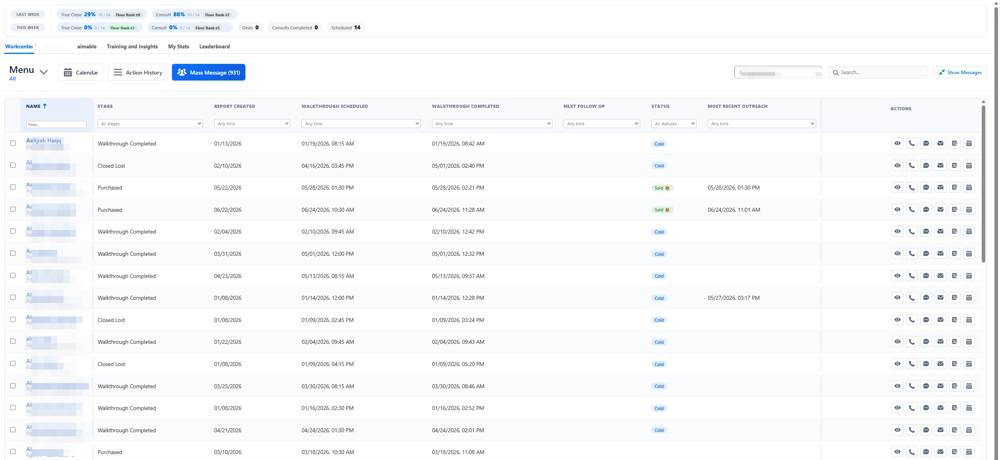
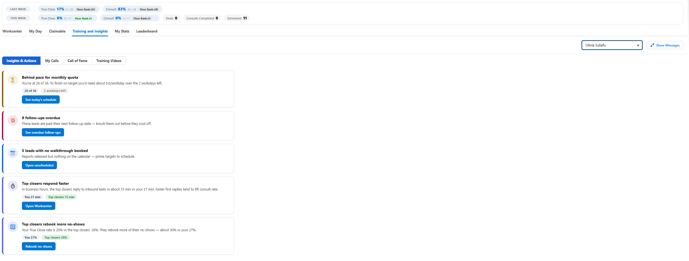
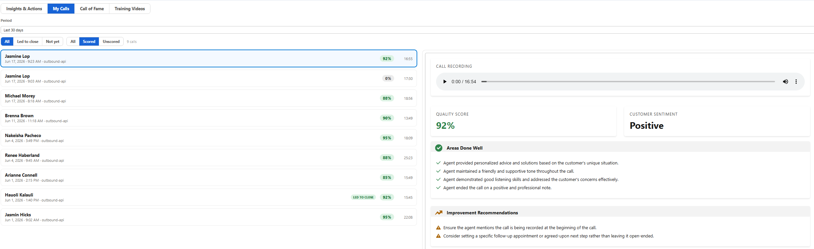
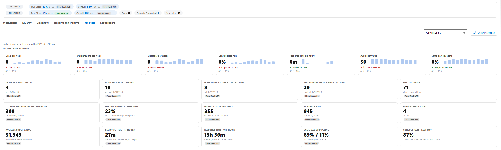

Flagship 01
Salesforce
Rep Enablement
AI Review
Salesforce Workcenter + Rep Enablement System
A custom CRM workcenter that gives reps one place to manage leads, daily schedules, action history, personal stats, training insights, leaderboard context, AI call reviews, and smart meeting coverage.
2xoverall rep efficiency after adoption
50%reduction in missed customer communication
Livepersonalized training loop from stats and calls
Rep-facing operating system for lead management, training, coverage, and accountability



